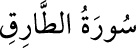

86- et-TÂRIK SÛRESİ
Beled sûresinden sonra Mekke’de inmiştir, 17 âyettir. Adını, 1. âyette geçen «târık»
kelimesinden alır. Târık, geceleyin gelen, şiddetlice vuran, kapı çalan demektir.
Sûrede geçen târık ise gece fazla ışık saçan yıldıza denir ki, bu, sabah yıldızıdır.
Mecâzî olarak da ünlü kişiye denir. Bir edebî sanat olarak câhiliye devri geceye, o
devirde gelen Hz. Peygamber de geceyi aydınlatan ve sabahı müjdeleyen sabah
yıldızına benzetilmiş olabilir.